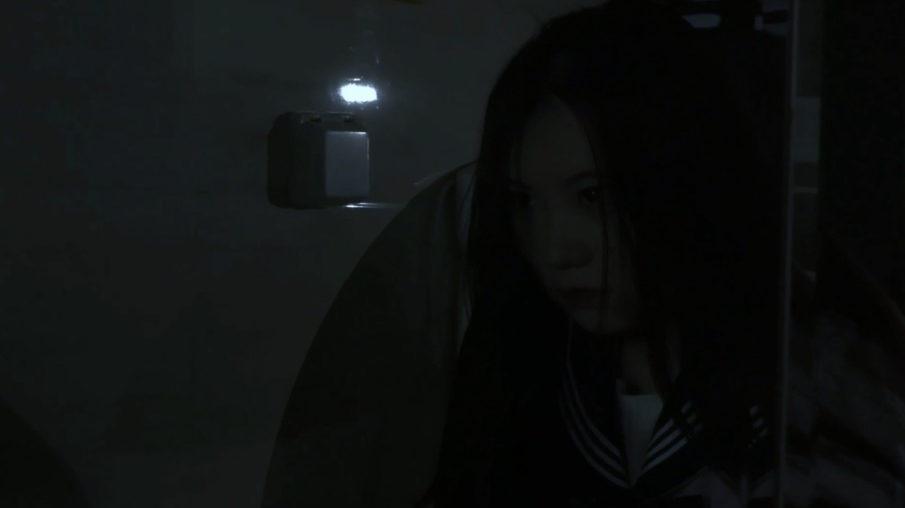
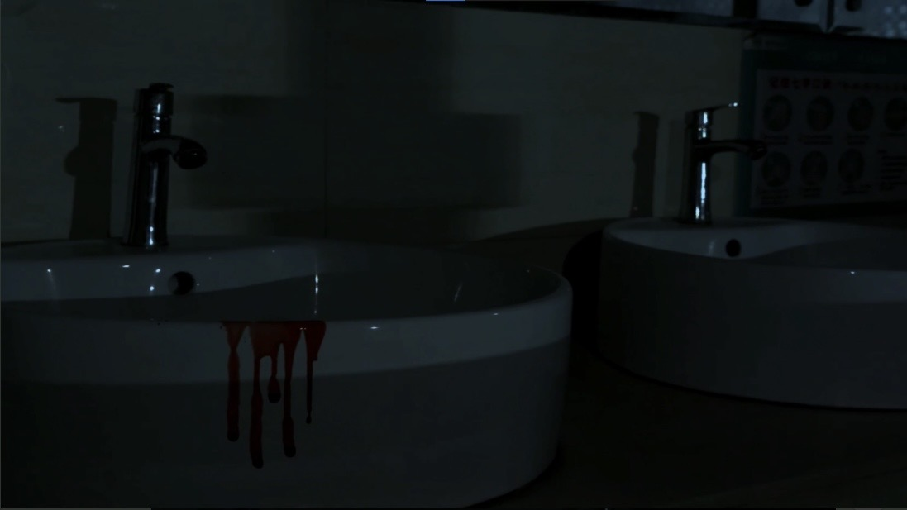
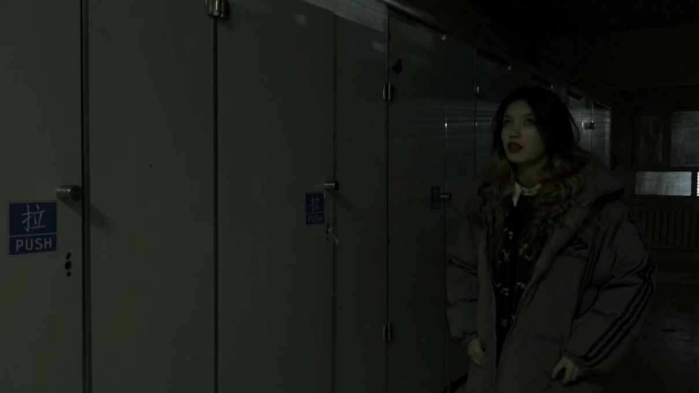
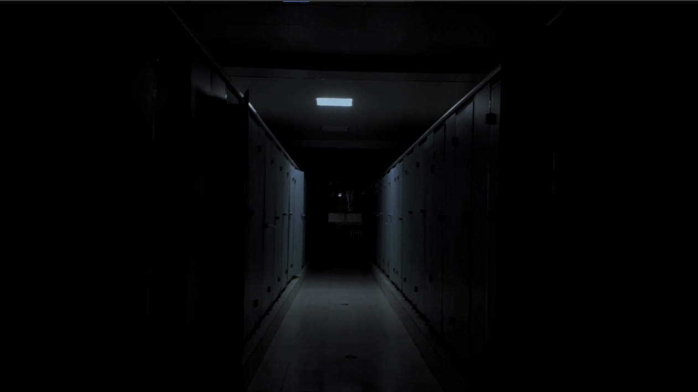

《魇》
Project Background
《魇》是一部围绕校园霸凌主题展开的心理惊悚短片。影片尝试通过现实与心理空间交织的方式，呈现人物在长期压迫与伤害下产生的心理变化。作品以类型片形式作为表达载体，将心理冲突转化为视觉与听觉体验。
Narrative Approach影片以人物心理变化作为核心线索，通过现实事件与主观心理空间之间的交错，展现人物从压抑、逃避到情绪爆发的过程。创作过程中，尝试利用类型元素服务人物心理表达，而非单纯依靠感官刺激制造效果。
Visual Language影片通过色彩设计、光影变化、镜头节奏、声音构建强化人物心理状态。视觉形式随着人物情绪变化进行调整，使视听语言服务于叙事表达。




